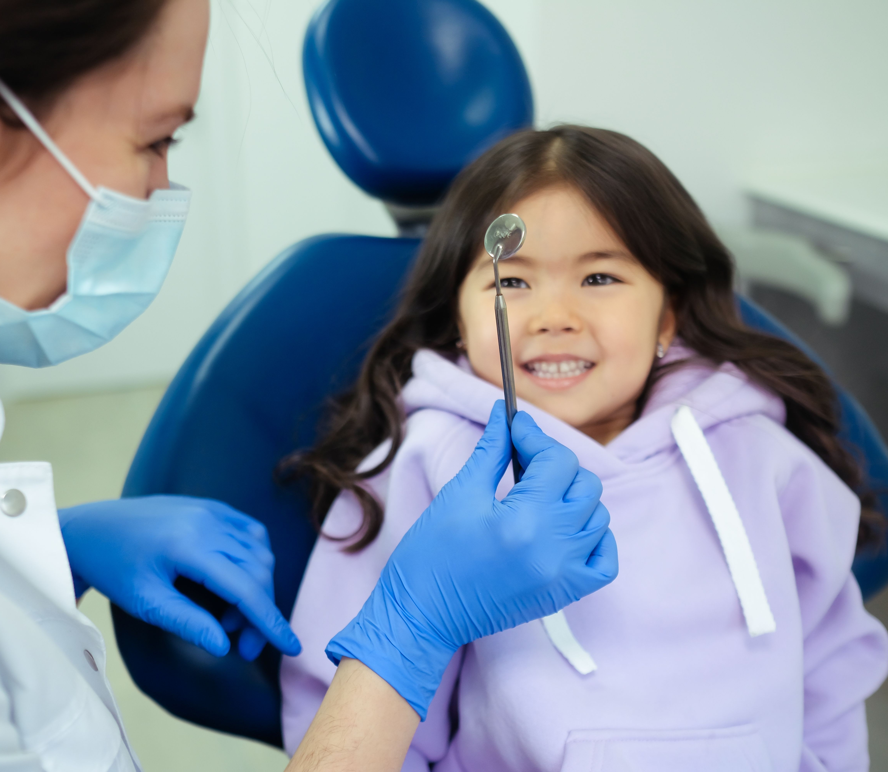
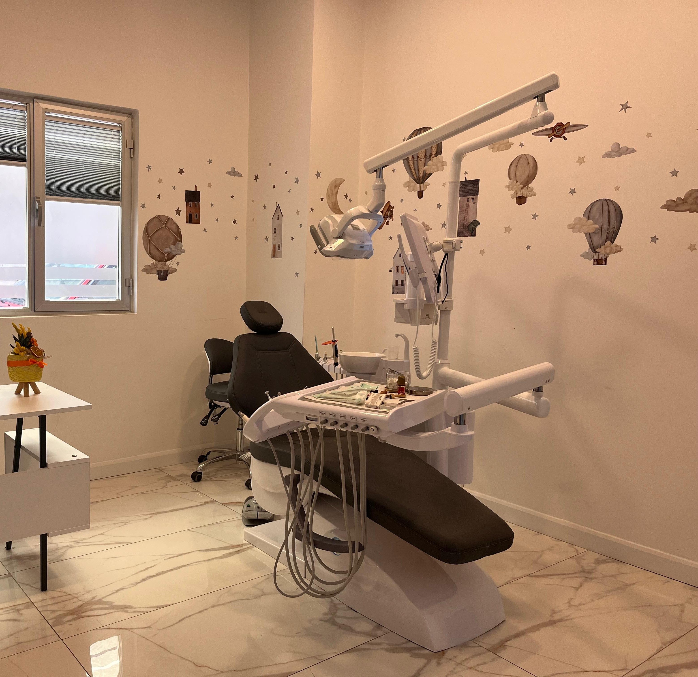

Pedodonti, bebeklik döneminden ergenlik çağına kadar çocukların ağız ve diş sağlığının korunması, gelişiminin takip edilmesi ve gerekli tedavilerin uygulanmasını kapsayan diş hekimliği dalıdır. Amaç; çocukların sağlıklı diş gelişimini desteklemek, oluşabilecek ağız ve diş problemlerini erken dönemde tespit ederek uygun tedaviyi planlamaktır. Çocuk dostu yaklaşımlar sayesinde tedavi sürecinin güvenli ve konforlu geçmesi hedeflenir.
Pedodonti; bebeklik döneminden başlayarak çocukluk ve ergenlik dönemindeki bireylere yönelik hizmet verir. Genellikle 0-16 yaş arasındaki çocukların ağız ve diş sağlığı ile ilgilenir. Düzenli kontroller sayesinde diş gelişimi takip edilir ve ihtiyaç duyulan koruyucu veya tedavi edici uygulamalar planlanır.
İlk diş hekimi muayenesinin, ilk süt dişi sürdükten sonra veya en geç 1 yaşına kadar yapılması önerilir. Erken dönemde gerçekleştirilen kontroller sayesinde olası sorunlar önceden fark edilebilir ve çocukların diş hekimi ile olumlu bir bağ kurmaları desteklenebilir.
Süt dişleri; çocuğun beslenmesi, konuşma gelişimi ve daimi dişler için gerekli yerin korunması açısından önemli bir göreve sahiptir. Tedavi edilmeyen süt dişleri ağrı, enfeksiyon ve erken diş kaybına neden olabilir. Bu durum ilerleyen dönemlerde daimi dişlerin sürmesini ve dizilimini de olumsuz etkileyebilir.
Pedodonti uzmanları, çocukların yaşına ve ihtiyaçlarına uygun iletişim teknikleri kullanarak tedavi sürecini güvenli ve rahat bir şekilde planlar. Amaç; çocuğun diş hekimi korkusunu azaltmak ve olumlu bir tedavi deneyimi yaşamasını sağlamaktır. Gerektiğinde tedavi süreci çocuğun uyumuna göre kademeli olarak planlanabilir.


Çocuklarımızın diş hekimi korkusu yaşamadan, güvenli ve konforlu bir ortamda tedavi olmalarını önemsiyoruz. Sabırlı yaklaşımımız ve çocuklara özel iletişim dilimiz sayesinde tedavi sürecini onlar için daha keyifli hale getiriyoruz.
Tedavi süreçlerimiz ve uygun randevu saatleri hakkında bilgi almak için bizimle iletişime geçebilirsiniz.
Sorularınız veya randevu talepleriniz için bizimle iletişime geçebilirsiniz.
Pazartesi - Cumartesi
10:00 - 19:00Pazar
Kapalı